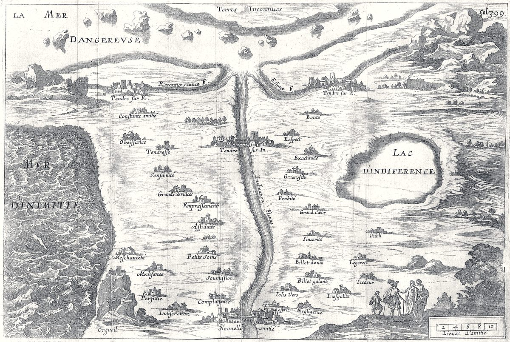

- База знаний
- Энциклопедия переходов
Энциклопедия переходов
Что происходит, как это называется и что помогает. У каждого подхода метка, насколько он исследован, и предупреждение, когда он не подходит.
Ищет сразу в практиках, статьях, атласе, ресурсах и словаре. Или начните с главного ↓

Что такое переход
Переход — период, когда прежняя опора или способ жить уже не работают, а новые ещё не сложились. Это не поломка, а нормальная часть жизни. Чтобы о нём говорить, удобно язык трёх стадий Уильяма Бриджеса — окончание, нейтральная зона, новое начало. Это модель-язык, а не исследованный этапный процесс.
Читать: Что такое переход Переход и расстройство адаптации: где граница →
С чем ты пришёл
12 ситуаций. На странице ситуации собрано всё из четырёх разделов: что сделать, что понять, кто помогает и что почитать.
- Закончилась работа или своё дело4 практики · 6 специалистов
- Переезд, и профессия не складывается4 практики · 7 специалистов
- Кризис идентичности4 практики · 4 специалиста
- Силы кончились, а что вместо — непонятно6 практик · 6 специалистов
- Несколько дорог, и не получается выбрать4 практики · 4 специалиста
- Планы срываются на одном и том же месте6 практик · 2 специалиста
- Всё хорошо, но не моё, и страшно5 практик · 3 специалиста
- Не знаю, к какому специалисту идти1 практика · 4 специалиста
- Рядом человек в кризисе2 практики · 3 специалиста
- Подвести год и выбрать, куда дальше5 практик · 5 подходов
- Тревога не отпускает5 практик · 6 специалистов
- Потеря близкого человека4 практики · 8 специалистов
Подходы и школы
38 подходов по семи шагам метода, 23 школы терапии, понятия и люди. Точки — метка доказательности.
- 1История родаГенограмма · Устная история семьи · Трансгенерационный подход · Архивный поиск с ИИ
- 2Твоя историяНарративная практика · Нарративная идентичность · Путь героя · Линия жизни · Обзор жизни · Экспрессивное письмо
- 3КомпасКолесо контекстов · Логические уровни Дилтса · Ценности в ACT · CliftonStrengths · Сильные стороны VIA · Большая пятёрка · Эннеаграмма · Работа с частями (IFS)
- 4КартаПланы Одиссеи · Лучшее возможное «я» · Взгляд из будущего · Прототипирующие разговоры · Икигай
- 5СнаряжениеПаттерны и другая дорожка · Ритуалы · Маленькие привычки · Время для тревоги · Окно толерантности · Самосострадание · План самопомощи · ИИ-собеседник
- 6МаршрутWOOP · Намерения «если — то» · Горизонты фокуса · Личные ретроспективы
- 7СпутникКлиент-центрированный подход · Практика доулы смерти · Ступенчатая помощь
- Больше про прошлоеСхема-терапия · Психоанализ и психодинамическая терапия · Нарративная практика · Модель внутренних семейных систем · ДПДГ · Процесс Хоффмана
- Больше про настоящееКогнитивно-поведенческая терапия · Диалектическая поведенческая терапия · Гештальт-терапия · Экзистенциальная терапия · Клиент-центрированный подход · Соматическое переживание · Майндфулнес
- Больше про будущееТерапия принятия и ответственности · Позитивная психология · Коучинг · Дизайн жизни · Движение «позитивного отношения к смерти»
- Ещё школы (черновики)Групповая терапия · Интерперсональная психотерапия · Методы релаксации · Поведенческая терапия · Системная семейная терапия
- ПонятияФазы горя по Верене Каст · Горе и затяжное горе · Общие факторы эффективности психотерапии · Парадигмы психотерапии · Терапевтический альянс · Виды психологической помощи · Внутренний конфликт · Выгорание · Защитные механизмы
- ЛюдиАарон Бек · Абрахам Маслоу · Альфред Адлер · Боб Хоффман · Джон Боулби · Фриц Перлз · Иван Павлов · Карл Роджерс · Карл Густав Юнг · Марша Линехан · Виктор Франкл · Вирджиния Сатир · Зигмунд Фрейд
Метка у каждого подхода: насколько он исследован. Не про то, как он сработает у вас.
- сильная
- умеренная
- ранняя
- спорная
- опыт практиков
Словарь · Как устроена база и как мы проверяем · Заметили ошибку — напишите в Telegram